The covidBR package provides easy access to official
COVID-19 data sets of Brazil. All functions’ syntax is based on a simple
logic that allows users to download updated data sets for all years.
This vignette provides an overview of covidBR.
Installation
You can install the development version of covidBR from
GitHub with:
# Development version
# install.packages("devtools")
devtools::install_github("arianacabral/covidBR")General usage
The covidBR allows you to obtain the URL on the
Covid-19 Portal available for
downloading the files.
Daily, the Ministry of Health (Ministério da Saúde) updates and publicly disseminates the database, and, consequently, the download URL is updated.
# Get updated URL to download the public file
download_url <- covidBR::cbr_download_url()
# Print URL
download_url
#> [1] "https://mobileapps.saude.gov.br/esus-vepi/files/unAFkcaNDeXajurGB7LChj8SgQYS2ptm/1b386b80cf23162edda1a942b9832380_HIST_PAINEL_COVIDBR_07nov2022.rar"Now let’s download the public file available at the obtained URL.
# Download public file
resp <- covidBR::cbr_download(url_file = download_url,
dir = here::here("inst/extdata"), #saving to "extradata" folder
keep_filename = TRUE)
# Get filename
filename <- fs::path_file(resp$url)
# Print filename
filenameA zip file has been downloaded from the COVID-19 Portal. We use the
cbr_unzip() function to unzip it.
# Set absolute directory
abs_path <- stringr::str_c(
here::here("inst/extdata"),
filename,
sep = "/"
)
# Unzip
covidBR::cbr_unzip(zip_file = abs_path,
dir = here::here("inst/extdata"), # the directory to extract archive contents
keep_zip_file = FALSE) # Delete the compressed fileSimply use the cbr_data() function to combine all files
and generate a single dataset.
You can already combine the files by specifying a time range of interest. For example, use the argument
date = Sys.Date()to retrieve today’s data.
Available variables
You can view what variables are available using the
str() function.
# Display the dataset's structure
str(covidBR.db)
#> Classes 'data.table' and 'data.frame': 5372632 obs. of 17 variables:
#> $ regiao : chr "Brasil" "Brasil" "Brasil" "Brasil" ...
#> $ estado : chr "" "" "" "" ...
#> $ municipio : chr "" "" "" "" ...
#> $ coduf : int 76 76 76 76 76 76 76 76 76 76 ...
#> $ codmun : int NA NA NA NA NA NA NA NA NA NA ...
#> $ cod_regiao_saude : int NA NA NA NA NA NA NA NA NA NA ...
#> $ nome_regiao_saude : chr "" "" "" "" ...
#> $ data : IDate, format: "2020-02-25" "2020-02-26" ...
#> $ semana_epi : int 9 9 9 9 9 10 10 10 10 10 ...
#> $ populacao_tcu2019 : int 210147125 210147125 210147125 210147125 210147125 210147125 210147125 210147125 210147125 210147125 ...
#> $ casos_acumulado : num 0 1 1 1 2 2 2 2 3 7 ...
#> $ casos_novos : int 0 1 0 0 1 0 0 0 1 4 ...
#> $ obitos_acumulado : int 0 0 0 0 0 0 0 0 0 0 ...
#> $ obitos_novos : int 0 0 0 0 0 0 0 0 0 0 ...
#> $ recuperadosnovos : int 0 1 1 0 1 1 0 0 1 4 ...
#> $ em_acompanhamento_novos: int 0 0 0 1 1 1 2 2 2 3 ...
#> $ interior_metropolitana : int NA NA NA NA NA NA NA NA NA NA ...
#> - attr(*, ".internal.selfref")=<externalptr>Data exploration
You may be interested in specific information, and we will now demonstrate how to work with some case scenarios.
Data exploration by date
For this purpose, we can use the package lubridate. It
is an R package that makes it easier to work with dates and times.
How can I get this year’s data?
# Get current date
today <- Sys.Date()
# Print current date
today
#> [1] "2022-11-09"
# Get this year
current_year <- lubridate::year(today)
# Print the current year
current_year
#> [1] 2022
# Set first day of this year
day_1 <- lubridate::ymd(paste0(current_year,"01","01",sep="-"))
# Print the first day of this year
day_1
#> [1] "2022-01-01"
# Get this year's data
covidBR.db <- covidBR::cbr_data(dir = here::here("./inst/extdata"),
date = c(day_1,
today))
#> Data from 2022-01-01 to 2022-11-09
# Tabular view
covidBR.db %>%
dplyr::select(regiao,
data,
casos_acumulado,
casos_novos,
obitos_novos) %>%
head(n = 10L) %>%
knitr::kable() | regiao | data | casos_acumulado | casos_novos | obitos_novos |
|---|---|---|---|---|
| Brasil | 2022-01-01 | 22291507 | 3986 | 49 |
| Brasil | 2022-01-02 | 22293228 | 1721 | 28 |
| Brasil | 2022-01-03 | 22305078 | 11850 | 76 |
| Brasil | 2022-01-04 | 22323837 | 18759 | 175 |
| Brasil | 2022-01-05 | 22351104 | 27267 | 129 |
| Brasil | 2022-01-06 | 22386930 | 35826 | 128 |
| Brasil | 2022-01-07 | 22450222 | 63292 | 181 |
| Brasil | 2022-01-08 | 22499525 | 49303 | 115 |
| Brasil | 2022-01-09 | 22523907 | 24382 | 44 |
| Brasil | 2022-01-10 | 22558695 | 34788 | 110 |
How can I get the last six months’ worth of data?
# Get current date
today <- Sys.Date()
# Print current date
today
#> [1] "2022-11-09"
# Get date from 6 months ago
date_6_months_ago <- today - months(6)
# Print date from 6 months ago
date_6_months_ago
#> [1] "2022-05-09"
# Get data from the last 6 months
covidBR.db <- covidBR::cbr_data(dir = here::here("./inst/extdata"),
date = c(date_6_months_ago,today))
#> Data from 2022-05-09 to 2022-11-09
# Tabular view
covidBR.db %>%
dplyr::select(regiao,
data,
casos_acumulado,
casos_novos,
obitos_novos) %>%
head(n = 10L) %>%
knitr::kable()| regiao | data | casos_acumulado | casos_novos | obitos_novos |
|---|---|---|---|---|
| Brasil | 2022-05-09 | 30574245 | 9709 | 53 |
| Brasil | 2022-05-10 | 30594388 | 20143 | 198 |
| Brasil | 2022-05-11 | 30617786 | 23398 | 126 |
| Brasil | 2022-05-12 | 30639130 | 21344 | 125 |
| Brasil | 2022-05-13 | 30664739 | 25609 | 139 |
| Brasil | 2022-05-14 | 30682094 | 17355 | 92 |
| Brasil | 2022-05-15 | 30688390 | 6296 | 46 |
| Brasil | 2022-05-16 | 30701900 | 13510 | 69 |
| Brasil | 2022-05-17 | 30728286 | 26386 | 229 |
| Brasil | 2022-05-18 | 30741811 | 13525 | 103 |
How can I get the last 30 days’ worth of data?
# Get current date
today <- Sys.Date()
# Print current date
today
#> [1] "2022-11-09"
# Get date from 30 days ago
date_30_days_ago <- today - lubridate::days(30)
# Print date from 30 days ago
date_30_days_ago
#> [1] "2022-10-10"
# Get data from the last 30 days
covidBR.db <- covidBR::cbr_data(dir = here::here("./inst/extdata"),
date = c(date_30_days_ago, today))
#> Data from 2022-10-10 to 2022-11-09
# Tabular view
covidBR.db %>%
dplyr::select(regiao,
data,
casos_acumulado,
casos_novos,
obitos_novos) %>%
head(n = 10L) %>%
knitr::kable()| regiao | data | casos_acumulado | casos_novos | obitos_novos |
|---|---|---|---|---|
| Brasil | 2022-10-10 | 34724189 | 4682 | 26 |
| Brasil | 2022-10-11 | 34731539 | 7350 | 86 |
| Brasil | 2022-10-12 | 34736653 | 5114 | 63 |
| Brasil | 2022-10-13 | 34739865 | 3212 | 43 |
| Brasil | 2022-10-14 | 34746462 | 6597 | 75 |
| Brasil | 2022-10-15 | 34748678 | 2216 | 9 |
| Brasil | 2022-10-16 | 34749058 | 380 | 2 |
| Brasil | 2022-10-17 | 34754590 | 5532 | 88 |
| Brasil | 2022-10-18 | 34762873 | 8283 | 83 |
| Brasil | 2022-10-19 | 34771320 | 8447 | 97 |
Data visualization
# Obtain data for Brazil
tidycovidBR <- covidBR::cbr_data(
dir = here::here("inst/extdata")) %>%
dplyr::filter(regiao == "Brasil")
# Select the interesting columns
tidycovidBR <- tidycovidBR %>%
dplyr::select(c(regiao, data,
casos_acumulado:obitos_novos))
# Tabular view
tidycovidBR %>%
head(n = 15L) %>%
knitr::kable()| regiao | data | casos_acumulado | casos_novos | obitos_acumulado | obitos_novos |
|---|---|---|---|---|---|
| Brasil | 2020-02-25 | 0 | 0 | 0 | 0 |
| Brasil | 2020-02-26 | 1 | 1 | 0 | 0 |
| Brasil | 2020-02-27 | 1 | 0 | 0 | 0 |
| Brasil | 2020-02-28 | 1 | 0 | 0 | 0 |
| Brasil | 2020-02-29 | 2 | 1 | 0 | 0 |
| Brasil | 2020-03-01 | 2 | 0 | 0 | 0 |
| Brasil | 2020-03-02 | 2 | 0 | 0 | 0 |
| Brasil | 2020-03-03 | 2 | 0 | 0 | 0 |
| Brasil | 2020-03-04 | 3 | 1 | 0 | 0 |
| Brasil | 2020-03-05 | 7 | 4 | 0 | 0 |
| Brasil | 2020-03-06 | 13 | 6 | 0 | 0 |
| Brasil | 2020-03-07 | 19 | 6 | 0 | 0 |
| Brasil | 2020-03-08 | 25 | 6 | 0 | 0 |
| Brasil | 2020-03-09 | 25 | 0 | 0 | 0 |
| Brasil | 2020-03-10 | 34 | 9 | 0 | 0 |
# Summary
summary(tidycovidBR)
#> regiao data casos_acumulado casos_novos
#> Length:987 Min. :2020-02-25 Min. : 0 Min. : -573
#> Class :character 1st Qu.:2020-10-28 1st Qu.: 5481323 1st Qu.: 11046
#> Mode :character Median :2021-07-02 Median :18687469 Median : 26749
#> Mean :2021-07-02 Mean :16979975 Mean : 35315
#> 3rd Qu.:2022-03-05 3rd Qu.:29041032 3rd Qu.: 49784
#> Max. :2022-11-07 Max. :34855492 Max. :298408
#> obitos_acumulado obitos_novos
#> Min. : 0 Min. : 0.0
#> 1st Qu.:158713 1st Qu.: 150.0
#> Median :521952 Median : 451.0
#> Mean :408614 Mean : 697.5
#> 3rd Qu.:652035 3rd Qu.:1023.0
#> Max. :688395 Max. :4249.0
# Check for duplicate dates
is_unique <- length(unique(tidycovidBR$data)) == length(tidycovidBR$data)
# Plot data
if(is_unique){
tidycovidBR %>%
dplyr::ungroup() %>%
tidyr::pivot_longer(
cols = -c(regiao,data),
names_to = "variavel",
values_to = "valor") %>%
dplyr::mutate_at("variavel",
stringr::str_replace_all,
pattern = "_",
replacement = " ") %>%
ggplot(aes(x = data, y = valor)) +
geom_line() +
facet_wrap(~ variavel, scales = "free_y", ncol = 1) +
labs(x = "Data da notificação",
y = "") +
theme_minimal()
}